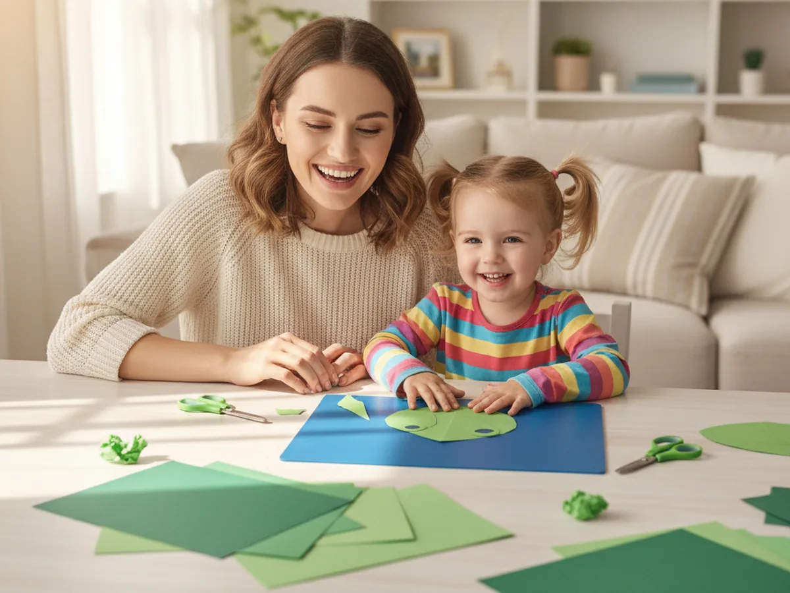
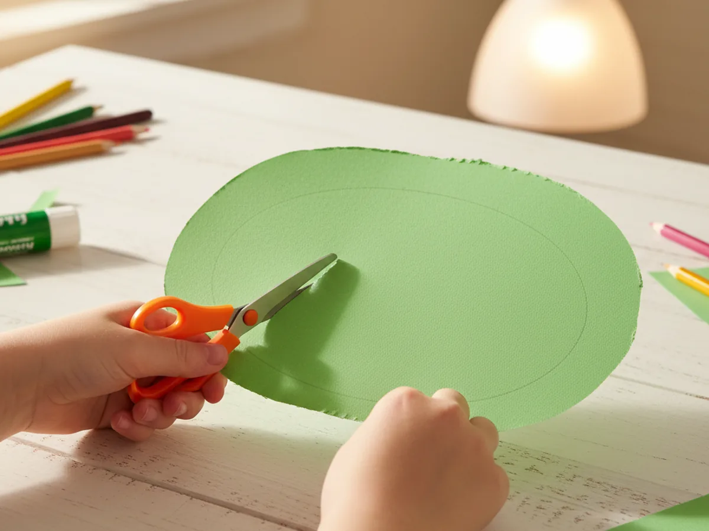
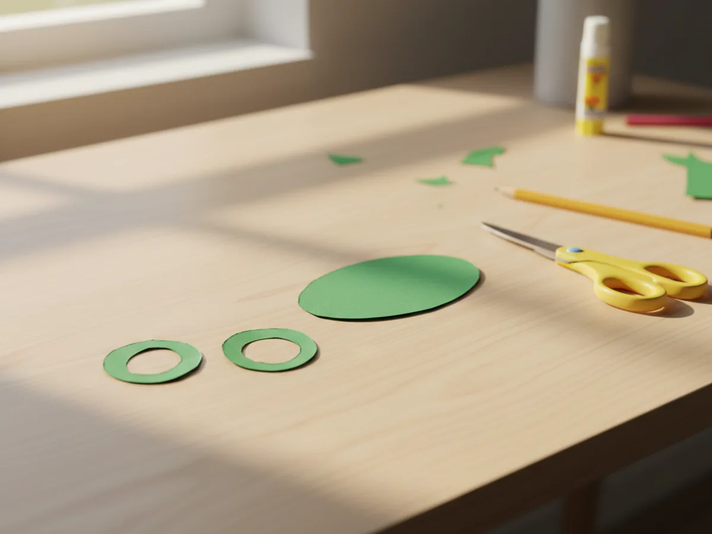
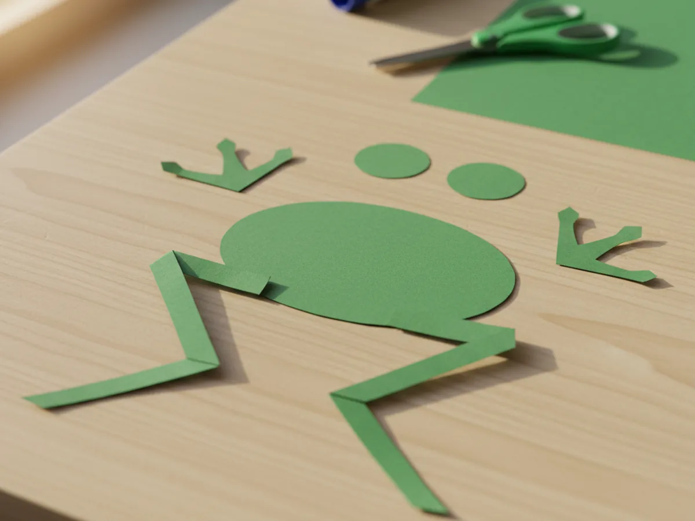
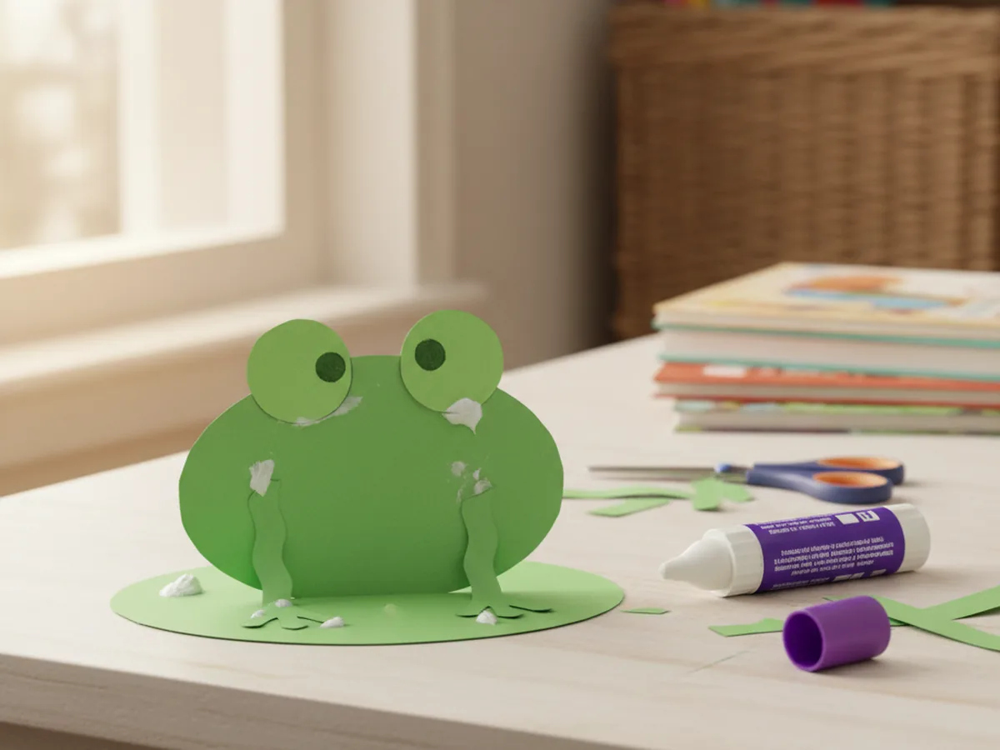
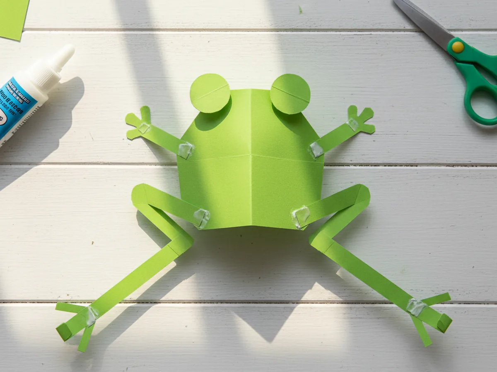
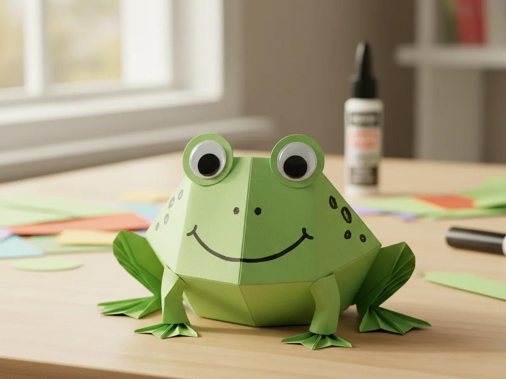

There is something wonderfully satisfying about a craft that turns a flat piece of green paper into a recognizable little creature, and this paper frog craft delivers exactly that. With just a few simple cuts and some glue, you and your child can build an adorable frog complete with big googly eyes and bendy legs. No paint, no mess, no complicated supplies. Just green construction paper, scissors, and a glue stick.
This paper frog craft for kids is one of those sweet afternoon activities that comes together quickly but feels genuinely exciting from start to finish. Kids love the moment when the googly eyes go on and their flat paper suddenly seems to come alive. Whether you are looking for a rainy day activity, a nature-themed project, or just a fun way to spend 25 minutes together, this one never disappoints. 🐸
Why Kids Love This Craft
Frogs have a special appeal for young children. They are cheerful, funny-looking creatures, and the moment a child places those googly eyes on their paper frog and sees it staring back at them, the room usually fills with giggles. That instant sense of "I made something real" is incredibly rewarding at any age.
Beyond the fun factor, this simple paper frog craft also works beautifully for developing fine motor skills. Cutting curves and circles builds hand strength and scissor control. Gluing small pieces in the right spots develops spatial awareness and concentration. And decorating the frog with spots or stripes at the end gives children a chance to express their own creativity.
Because the steps are short and the results are immediate, even children with a short attention span tend to stay engaged through the whole project. Each stage produces a visible change, so there is always something new to be excited about. And when the frog is done, it makes a perfect little table decoration, a prop for pretend play, or a homemade gift for grandma.

What You'll Need
Everything for this paper frog craft is simple and easy to find. Lay it all out before you sit down together so the activity flows smoothly from start to finish.
- Prang Construction Paper, Holiday Green (100 sheets), the main material for the frog's body, eyes, and legs.
- Fiskars Training Scissors for Kids, spring-action and blunt-tipped, great for ages 3 and up.
- Elmer's Disappearing Purple School Glue Sticks (30-pack), washable and easy for small hands to grip and use.
- DECORA Self-Adhesive Googly Eyes (assorted sizes), two per frog, peel and press onto the eye bumps.
- A black washable marker, for drawing the smile, nostrils, and any spots or details.
- A pencil, for tracing shapes before cutting.
Step-by-Step Instructions
This paper frog craft step by step is easy to follow even if you have never done it before. Take it one piece at a time and enjoy each stage together.
Step 1: Cut the Frog Body
Start with a full sheet of green construction paper. Use a pencil to draw a large rounded oval or slightly squarish shape that fills most of the page. This will be the frog's main body. It does not need to be a perfect oval. A slightly rounded rectangle works just as well and is often easier for younger children to cut. Once the shape is drawn, have your child cut it out along the pencil line.
For toddlers and young preschoolers, trace the shape yourself and let them handle the cutting. A few wobbly edges only add charm to the finished frog.

Step 2: Cut Out the Eye Bumps
The eye bumps are what give this paper frog craft its classic frog look. Cut two circles from green paper, each roughly the size of a large coin or a bottle cap. They do not need to be identical. In fact, two slightly different circles look very natural and give your frog a charming personality. These will sit on top of the body, and the googly eyes will be placed on them later.

Step 3: Cut the Frog Legs
Now cut four leg shapes from green paper. For the front legs, cut two shorter, slightly curved strips. For the back legs, cut two longer strips and fold or bend them slightly near the middle to create that classic bent-knee frog shape. The legs can be simple and a little rough-looking. Young children often make them delightfully wiggly, which looks great on the finished frog.

Step 4: Glue the Eye Bumps and Front Legs
Apply a good amount of glue stick to the back of each eye bump circle and press them firmly side by side onto the top edge of the frog's body. Let them overlap the edge slightly so they peek up above the head. Then apply glue to the front legs and press one on each side of the lower part of the body. Hold each piece down for a few seconds so it catches properly.
Your frog is already starting to look recognizable at this stage, and kids tend to get very excited when they see the shape coming together. 🎨

Step 5: Attach the Back Legs
Apply glue to the two longer back leg strips and press them onto the bottom corners of the frog's body, angling them outward so it looks as though your frog is sitting with its legs spread wide and ready to leap. Bend or fold the ends of the legs outward slightly to suggest frog feet. This step is always a favourite because kids love the idea that their frog looks like it could jump right off the table.

Step 6: Add the Face and Finishing Details
Now for the most exciting step. Peel the backing off two googly eyes and press one onto each eye bump circle. Then use a black washable marker to draw a wide, cheerful smile curved across the lower part of the body, and add two small dot nostrils just above the smile. From here, your child can go wild with details. Spots and stripes look great on paper frogs, and some children love adding a little red tongue peeking out from the mouth. Every frog ends up slightly different, and that is exactly what makes this craft so special. 🌿

Variations to Try
Pond Scene Display: Make two or three frogs in slightly different sizes, then arrange them on a large piece of blue paper cut into a pond shape. Add green paper lily pads and a yellow paper sun in the corner. Children love creating a little world for their frogs to live in, and it makes a wonderful piece of wall art for a bedroom or playroom.
Accordion-Leg Jumping Frog: Instead of cutting simple strips for the legs, fold the paper strips accordion-style to create springy legs. When the frog is pressed down and released, the legs push it slightly off the table for a fun jumping effect. Older children aged 5 and up enjoy this version especially.
Decorated Pattern Frog: Before cutting the body shape, have your child decorate the green paper with patterns using washable markers or crayons. Stripes, zigzags, dots, or rainbow swirls all look beautiful once the frog is assembled. This variation is lovely for children who enjoy the artistic, decorating side of crafts more than the cutting and gluing.
Final Thoughts
This paper frog craft is one of those crafts that manages to be genuinely simple while still producing a result that children feel truly proud of. From the first cut to the moment those googly eyes go on, it is full of little surprises and satisfying moments. It takes around 25 minutes, uses only basic supplies, and leaves almost no mess behind. Most of all, it gives you a real shared moment with your little one, making something together with your own hands.
If your child made a frog, I would love to see it! Share a photo on Pinterest and pin this article so other craft-loving mamas can find it easily. Happy crafting! 🐸
More Crafts You'll Love
If your little one loved this paper frog craft, these other fun animal paper crafts are sure to be a hit too: